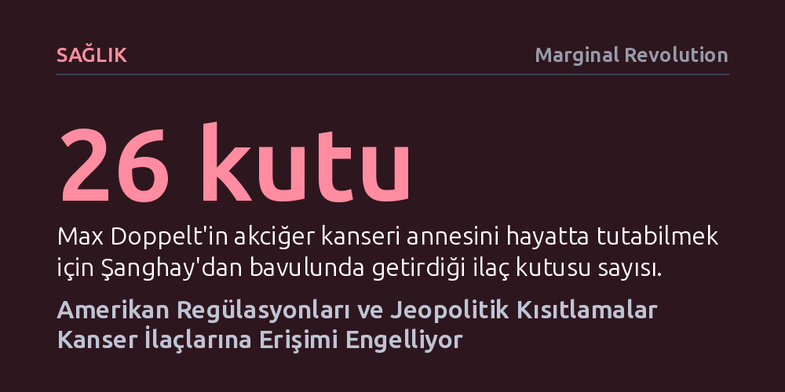

SAGLIK · Marginal Revolution · 2026-10-24
Çin'de onaylanan hayat kurtarıcı kanser ilaçlarının ABD'de bürokrasi yüzünden gecikmesi, çaresiz hastaları Şanghay'dan bavulla ilaç getirmeye mecbur bırakıyor. FDA reformu yapılmadığı gibi Çin'le yapılan ilaç ortaklıklarına getirilen yeni siyasi kısıtlamalar, tedaviye erişim krizini derinleştiriyor.
Biyoteknolojik yeniliklerin sağladığı hayat kurtarıcı faydaların, hantal regülasyonlar ve korumacı jeopolitik refleksler uğruna feda edildiğinde doğrudan insan hayatına nasıl mal olduğunu gösteriyor.

Ocak 2025'te akciğer kanseri beynine sıçrayan bir hastanın ailesi, Amerika Birleşik Devletleri'nde derin bir çaresizlikle karşı karşıya kaldı. Hastaya yardım etme ihtimali en yüksek olan yeni nesil ilaç Çin'de ruhsat almışken, Amerikan sağlık sisteminde henüz onaylanmamıştı. Bir hekimin fısıldarcasına sarf ettiği "Eğer Çin vatandaşı olsaydı bu ilacı eczaneden kolayca alabilirdi" sözü, aileyi sıra dışı bir arayışa itti.
Hastanın oğlu Max Doppelt, çareyi Şanghay'a uçup bavulunda 26 kutu ilaçla ülkesine dönmekte buldu. Bu riskli yolculuğun üzerinden geçen 19 ayın ardından annesi yalnızca hayatta kalmakla kalmadı; işine devam ederek dolu dolu bir üç yıl geçirdiğini ifade ediyor. Bu deneyim münferit bir olay da değil; benzer çaresizliği yaşayan ve aynı hayati ilaca erişebilmek için Çin'e gitmek zorunda kalan en az 30 Amerikalı hasta bulunuyor.
Söz konusu ilacın ruhsatlandırma serüveni, küresel biyoteknolojideki acı verici bir tezatı açığa çıkarıyor. İlaç, Çin'deki yetkili kurumlardan 2023 yılında onay alarak hastalara sunulmuşken, Amerikan Gıda ve İlaç Dairesi (FDA) aynı ilacı ancak Temmuz 2025'te onaylayabildi. Üstelik resmi onayın üzerinden aylar geçmiş olmasına rağmen, ilaç ABD pazarında hâlâ fiilen satışa sunulmuş değil.
Bu tablo, hayat kurtarma potansiyeline sahip tedavilerin Amerikan bürokrasisine nasıl takıldığını açıkça ortaya koyuyor. Yaşam mücadelesi veren kanser hastalarının yıllara yayılan bürokratik onay ve dağıtım süreçlerini beklemesi, FDA sisteminde köklü bir reformu zorunlu kılıyor. Başka ülkelerde etkinliği kanıtlanmış ilaçların hastalara vaktinde ulaştırılamaması, regülasyonların koruyuculuktan ziyade bir bariyere dönüştüğünü gösteriyor.
Sorun sadece bürokratik hantallıkla da sınırlı kalmıyor; Washington'da tırmanan jeopolitik gerilim sağlık alanını doğrudan tehdit ediyor. Temsilciler Meclisi Çin Komitesi Başkanı John Moolenaar ve Debbie Dingell öncülüğünde hazırlanan yasa tasarısı, Amerikalı ilaç şirketlerinin Çinli firmalarla yapacağı tüm ticari ortaklıkların ABD Hazine Bakanlığı onayına tabi tutulmasını öngörüyor.
Bu hamle, annesini hayatta tutmak için Şanghay'dan bavulunda ilaç taşıyan bir evladın karşısına, havalimanının bagaj teslim bandında Hazine avukatlarını dikmek anlamına geliyor. Oysa Çin ve Hindistan'ın zenginleşmesi, Amerikan toplumu için daha fazla kanser ilacı ve bilimsel ilerleme anlamına geliyor. Ulusal güvenlik bahanesiyle küresel biyoteknoloji işbirliklerine set çekmek, faturayı doğrudan yaşam savaşı veren hastalara ödetiyor.